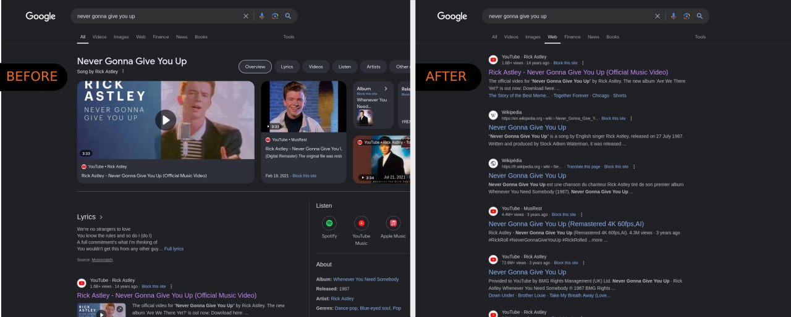

Simplify the way Google shows you results, without the chaos.

Web mode is a feature of Google search that disables AI suggestions and widgets (such as calculator, etc), recommendations, and more.
This plugin forces all Google searches to use the new 'Web' mode.This effectively disables all the unnecessary features to only give you search results without the fluff.
You can disable this feature at any time by clicking on the plugin icon in the toolbar.
This won't improve search results, but should give you a better access to the information you are actually looking for, without being drowned in recommendations, AI generated content, etc.
